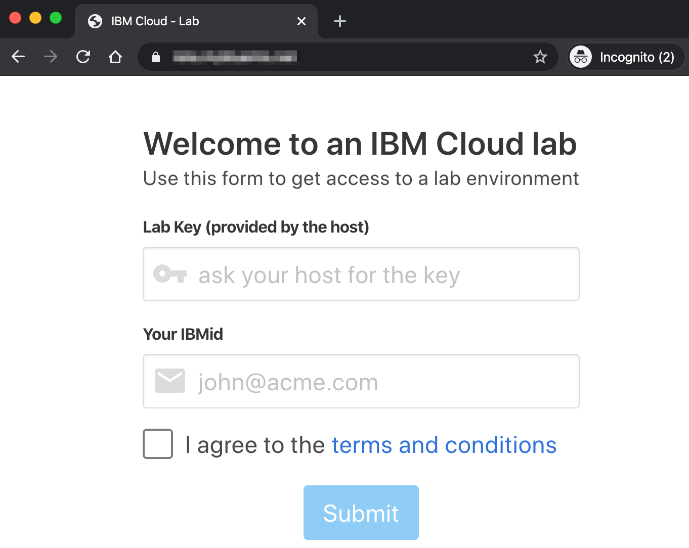
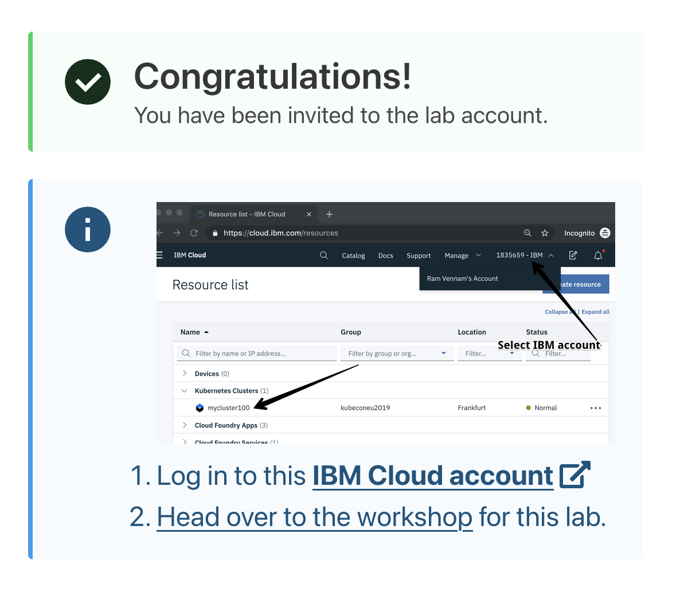

Access the lab environment
In this section, you will get access to an IBM Cloud Lab account which contains pre-provisioned clusters. Each lab attendee will be granted access to one cluster.
Access the lab
Instructors will provide a URL to a web app. Enter your email and the lab key provided by the instructor.

Follow the instructions on the next page. You will be added to the IBM Workshop account and granted access to a cluster.
